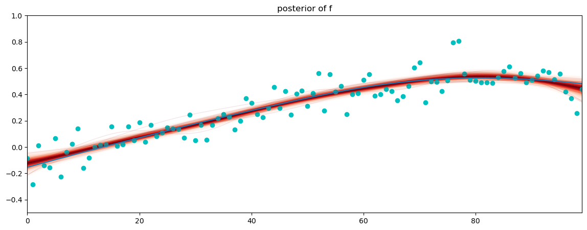

---
title: "My Post"
description: "Post description"
author: "Fizz McPhee"
date: "5/22/2021"
draft: true
---import numpy as np
import matplotlib.pyplot as plt
import pymc as pm
import pytensor.tensor as pt
import arviz as az
import nutpie
RANDOM_SEED = 8998
rng = np.random.default_rng(RANDOM_SEED)Intro
In a lot of Bayesian models you can more often than not get away with using weakly informative priors without dwelling on the details too much. Often you’ll set priors like Gaussians with large variances for regression coeficients, or half-normals for standard deviation parameters, and you can trust that your model will give reasonable results. With GPs this isn’t the case. You’ll have to pause and think a little more carefully about it for every model, particularly for the lengthscale parameter. There’s a good amount of papers written about the topic so it’s best to stick with what the research has found to work well, instead of trying to come up with your own lengthscale priors on the spot.
The long story short is that the inverse gamma distribution is a great all-purpose choice (pm.InverseGamma). I doubt that for TVP’s you’ll need to use a different distribution. We also need to take a lot of care in how we parameterize it, that matters even more than the choice of distribution. Fortunately, it doesn’t require a ton of math to motivate this choice and understand the failure modes and it’s really not that complicated once you walk through it, which we’ll do next.
The lengthscale prior is important
Before getting into, I want to show how using uninformative / bad lengthscale priors can cause problems. To demonstrate this, I’ll draw some prior samples from a GP where the lengthscale has a uniform prior from 0 to 100, and the x data is daily, going from 0 to 100 days.
What happens under the hood is: 1. Draw one sample from the lengthscale prior 2. Plug that into the covariance function 3. Calculate the covariance matrix over all pairs of x 4. Draw one sample from a multivariate normal with that covariance matrix 5. Repeat
So each of the samples below is a sample with a different lengthscale.
x = np.arange(100)
ell = pm.Uniform.dist(lower=0.0, upper=100.0)
cov = pm.gp.cov.Matern52(1, ls=ell)
n_samples = 25
s = pm.draw(pm.MvNormal.dist(mu=np.zeros(len(x)), cov=cov(x[:, None])), draws=n_samples, random_seed=rng)
fig, ax = plt.subplots(1, 1, figsize=(14, 5))
ax.plot(x, s.T);
ax.set_xlim([0, 100]);
ax.set_xlabel("x");
ax.set_title(f"{n_samples} samples from a GP with $\ell \sim U(0, 100)$");These are look very different, in terms of wiggliness. Some of the samples from the GP change very slowly and some change very rapidly. Unless you’re really fishing, you probably already know quite a bit about the rate at which changes are happening. TikTok may make substantive or relevant changes to their algorithm on roughly a monthly time scale, instead of annual, or by the minute. A particular ad campaign may run for a few weeks at a minimum. These sorts of insights help put priors on the lengthscale (which has units as x).
If you stare at it a while, you might also notice that there are a lot more very smooth, slowly varying lines than there are wiggly, quickly changing lines. This is because a uniform prior on the the lengthscale doesn’t translate to uniform “wiggliness”. This is why the uniform prior isn’t a good prior. We can’t quantify the wiggliness of each sample by calculating the number of zero crossings of each sample. A very smooth sample may cross zero once, or not at all. A very wiggly sample will cross zero many times. I think the number of zero crossings is a better measure for how wiggly a function appears to be. Keep in mind that the number of zero crossings will of course depend on the domain of x. In this case x runs from 0 to 50 days.
n_samples = 1000 # draw 1000 samples from a GP with the uniform lengthscale
s = pm.draw(pm.MvNormal.dist(mu=np.zeros(len(x)), cov=cov(x[:, None])), draws=n_samples, random_seed=rng)
zcs = (np.diff(np.sign(s), axis=1) != 0).sum(axis=1) # calculate zero crossings of each sample
plt.hist(zcs, bins=np.arange(50));
plt.xlabel("Number of zero crossings in 50 days");
plt.ylabel("Number of GP samples");
plt.title("Count of zero crossings, Unif(0, 100) prior");
We can clearly see that the number of zero crossings is strongly skewed towards zero. So gradually, slowly changing samples are strongly represented. The point of this was to show that while lengthscale controls wiggliness, it doesn’t equal it. If it did, we might expect a uniform prior on lengthscale to give us a uniform distribution of zero crossings, but that clearly isn’t the case.
Before moving on, let’s try out the inverse gamma prior we said at the beginning was the best. Imagine we’re roughly aiming for weekly variation, maybe because new products are introduced every week. Let’s set a prior on the lengthscale that’s inverse gamma, where 90% of the prior mass is between 5 and 10, to roughly give us weekly variation. We can use the built-in function pm.set_constrained_prior to help us do that.
# why inverse gamma rather than normal pm.find_constrained_prior(
pm.Normal,
lower=4, upper=11, mass=0.95,
init_guess={"mu": 7, "sigma": 2},
){'mu': 7.499959574903695, 'sigma': 1.7857473928234064}ell_params = pm.find_constrained_prior(
pm.InverseGamma,
lower=4, upper=11, mass=0.95,
init_guess={"mu": 7, "sigma": 2},
)
ell = pm.InverseGamma.dist(**ell_params)
cov = pm.gp.cov.Matern52(1, ls=ell)
n_samples = 1000
s = pm.draw(pm.MvNormal.dist(mu=np.zeros(len(x)), cov=cov(x[:, None])), draws=n_samples, random_seed=rng)
zcs = (np.diff(np.sign(s), axis=1) != 0).sum(axis=1) # calculate zero crossings of each sample
plt.hist(zcs, bins=np.arange(20));
plt.xlabel("Number of zero crossings in 50 days");
plt.ylabel("Number of GP samples");
plt.xticks(np.arange(20));
plt.title("Count of zero crossings, InverseGamma prior");It’s not a uniform prior, but it does center pretty nicely around 7, and the width of the distribution looks reasonable too. Three zero crossings in 50 days corresponds roughly to a zero crossing every 16 days, and 12 zero crossings in 50 days corresponds roughly to a zero crossing every 4 days. This GP should be aimed at weekly, but still be flexible enough to adapt to the data. It won’t be able to consider daily or monthly variation.
Below are some samples with the inverse gamma lengthscale prior. To the eye the variation for all the samples looks like it happens on weekly scales but there’s still a ton of freedom to fit different trends or patterns, as long they happen on a weekly scale.
# KATE NOTE: try tweaking these and get a simple gp to git
# Try dummy data
fig, ax = plt.subplots(1, 1, figsize=(14, 5))
ax.plot(x, s[np.arange(25), :].T);
ax.set_xlim([0, 100]);
ax.set_xlabel("x");
The takeaway is that the best overarching principle for setting the lengthscale prior is to be as informative as possible. The point if this example is to show that if the lengthscale is allowed to float freely, GPs are really flexible, and the lengthscale doesn’t equally weight smooth and wiggly functions. In fact, it’s a bit counterintuitive, but by using a uniform prior on the lengthscale you’re actually using a very informative prior that heavily weights flat or nearly flat GPs. The best approach is to take a bit of time to come up with an informative prior for the lengthscale.
How to set informative priors
My favorite way to do this is with tail probabilities because I find them easier to think about. To me, it’s more meaningful to say, “95% of the lengthscale mass is between 1 and 5”, instead of “the mean of the lengthscale is 2, and the standard deviation is 2”. With the first statement, you’re saying that you think that it’s really unlikely that the lengthscale is smaller than 1 or larger than 5. In the second, you’re conveying a sense of where you think the lengthscale should be located, and then setting the uncertainty around that. Even if these two statements were to be equivalent, by setting tail probabilities you’re ruling values out, instead of preferring some values over others.
You can do this in PyMC with the utility function pm.find_constrained_prior.
pm.find_constrained_prior(
pm.Normal,
lower=1, upper=5, mass=0.95,
init_guess={"mu": 2, "sigma": 1},
){'mu': 2.2321082679792026, 'sigma': 0.7485883342665849}You may notice it’ll fail to converge if you use too narrow of a range for inverse gammas,
pm.find_constrained_prior(
pm.InverseGamma,
lower=3, upper=5, mass=0.95,
init_guess={"mu": 2, "sigma": 1},
)--------------------------------------------------------------------------- ValueError Traceback (most recent call last) Cell In[9], line 1 ----> 1 pm.find_constrained_prior( 2 pm.InverseGamma, 3 lower=3, upper=5, mass=0.95, 4 init_guess={"mu": 2, "sigma": 1}, 5 ) File ~/miniforge3/envs/techstyle/lib/python3.11/site-packages/pymc/func_utils.py:187, in find_constrained_prior(distribution, lower, upper, init_guess, mass, fixed_params, mass_below_lower, **kwargs) 183 opt = optimize.minimize( 184 target_fn, x0=list(init_guess.values()), jac=jac, constraints=cons, **kwargs 185 ) 186 if not opt.success: --> 187 raise ValueError( 188 f"Optimization of parameters failed.\nOptimization termination details:\n{opt}" 189 ) 191 # save optimal parameters 192 opt_params = { 193 param_name: param_value for param_name, param_value in zip(init_guess.keys(), opt.x) 194 } ValueError: Optimization of parameters failed. Optimization termination details: message: Iteration limit reached success: False status: 9 fun: 0.0014422914420487301 x: [ 3.961e+00 7.141e-01] nit: 100 jac: [-1.901e-02 2.360e-02] nfev: 1042 njev: 100
When this happens, I’ll usually switch to pm.LogNormal. It’s a similarly shaped distribution to the inverse gamma, but it’s a bit suboptimal as a lengthscale prior because it doesn’t penalize small values as much as the inverse gamma. However, if you’re prior is so strong that the inverse gamma doesn’t work, small lengthscales won’t be a problem.
pm.find_constrained_prior(
pm.LogNormal,
lower=3, upper=5, mass=0.95,
init_guess={"mu": 2, "sigma": 0.2},
){'mu': 1.354045683682159, 'sigma': 0.13031529959654345}Lengthscale too small
Often, it’s not enought to just be more informative. There are cases where the GP will just fail to work due to how the lengthscale prior was set. We’ll start with the case when the lengthscale is too small. This case is a bit more cut and dry than the situation when the lengthscale is too large. It might be somewhat obvious, but for your case with daily x data, you wont be able to see variation that happens faster than daily (and you probably don’t care about it anyway). Here’s an example. We’ll draw samples from a GP prior, but we’ll lower the lengthscale below the resolution of the data and see what happens.
Before actually seeing the example, it’s helpful to know that you can think of a GP as smoothing a sample of random Gaussian noise using a kernel, just like a kernel density esimator. We’ll use that fact in the example to smooth a single sample of Gaussian noise with the set of different different lengthscales. I like doing it this way because it makes each sample directly comparable to the others.
n = 50 # number of days of data
x = np.arange(n)
lengthscales = [0.5, 0.75, 1.0, 1.5, 2.0, 3.0, 5.0, 6.0]
colors = np.linspace(0, 1, len(lengthscales))
fig, ax = plt.subplots(1, 1, figsize=(14, 5))
# draw a sample of random noise
z = rng.normal(size=n)
for i, ell in enumerate(lengthscales):
cov = pm.gp.cov.Matern52(input_dim=1, ls=ell)
K = cov(x[:, None]).eval()
L = np.linalg.cholesky(K + 1e-6 * np.eye(n))
f = L @ z
ax.plot(x, f, color=plt.cm.viridis(colors[i]), label=f"$\ell={ell}$")
m = ax.plot(x, z, color="k", label="z");
ax.legend(loc="upper left");
ax.set_xlim([-6, n]);
ax.set_xlabel("day");
ax.set_title("Draws from GP prior");You can see big changes in the curve at larger lengthscales, until you get down to lengthscales below a day. At \(\ell \leq 1\), they start to blur together until finally the lengthscale is small enough that no smoothing happens to z and you get z back as it was (shown as the black line).
Imagine you put a prior on \(\ell\) that had all of it’s mass between zero and one. This is functionally the same as adding normal distribution prior to every day of your data – which probably isn’t what you want to do. What your prior is saying is that there is no relationship between the values of the TVP on successive days, so there’s no smoothing happening.
A good lengthscale prior will have a pretty hard cutoff on low values of the lengthscale, especially below the resolution of the data. This is one reason that makes the inverse gamma a good probability distribution to use. It’s shown against a few other distributions below.
fig, ax = plt.subplots(1, 1, figsize=(14, 5))
s = pm.draw(pm.InverseGamma.dist(mu=2.5, sigma=1), 20_000)
plt.hist(s, np.linspace(0, 5, 100), color="slateblue", alpha=0.6, label="inverse gamma");
s = pm.draw(pm.Lognormal.dist(mu=0.8, sigma=0.4), 20_000)
plt.hist(s, np.linspace(0, 5, 100), color="r", alpha=0.3, label="log-normal");
s = pm.draw(pm.HalfNormal.dist(sigma=2), 20_000)
plt.hist(s, np.linspace(0, 5, 100), color="orange", alpha=0.2, label="half-normal");
s = pm.draw(pm.TruncatedNormal.dist(mu = 2.5, sigma=1, lower=1), 20_000)
plt.hist(s, np.linspace(0, 5, 100), color="g", alpha=0.2, label="truncated-normal");
# x = pm.TruncatedNormal('x', mu=0, sigma=10, lower=0)
ax.set_yticks([]);
ax.set_xlim([0, 5]);
ax.set_xlabel("x");
ax.legend();You can see from the picture that for the particular values of the prior, the inverse gamma has a pretty hard cutoff for values below 1. The log-normal isn’t as strong there and the half-normal peaks at zero.
Large lengthscales
A large lengthscale isn’t inherently a problem. Sometimes you want to allow large lengthscales. Two issues will likely arise though:
- The GP starts to look a lot like other components that you may already have in your model, particularly the intercept. When the lengthscale is very large, the GP will model flat lines at varying heights, which is exactly what an intercept is.
- We don’t see enough “repetitions” or cycles of the GP to be able to learn the value of lengthscale. This can cause poor sampling performance. In this case, you need to compensate by either using a very informative prior, or using a simpler component in your model, like a linear trend. It may make sense in some cases to fix the lengthscale value to a large number, especially if it’s something larger than the domain of the data.
To see what an illustration, below are 10 samples from a GP with a long lengthscale.
fig, ax = plt.subplots(1, 1, figsize=(14, 5))
## plot long lengthscale GP samples
x = np.arange(100)
eta = 1
ell_long = 200
cov = eta**2 * pm.gp.cov.Matern52(1, ls=ell_long)
n_samples = 10
s = pm.draw(pm.MvNormal.dist(mu=np.zeros(len(x)), cov=cov(x[:, None])), n_samples, random_seed=rng)
ax.plot(x, s.T, color="slateblue", lw=3);
ax.set_xlim([0, 100]);
ax.set_xlabel("x");
ax.set_title(f"{n_samples} samples from a GP with $\ell = {ell_long}$");
These samples are all almost flat, or at best linear. Since the intercept is (usually) used to fit the mean of the data, you need to be careful if you have an intercept adding to a GP in your model. If you have two terms additive terms in your model that are doing the same thing, you’ll get identifiabilty issues. If your lengthscale is small this isn’t an issue.
The scale parameter, eta, also comes into play here. You’ll notice in the plot above, we set eta = 1. All the flattish GP samples are all hanging around between -1.5 and 1.5. If you were trying to fit data whose average value was 100 it would be less problematic to have a long lengthscale GP and an intercept together, because the GP and the intercept will be identifiable together.
It’s tricky because knowing what’s happening with the GP and how it interacts with the other parameters in your model, depends on the values of the scale eta and lengthscale ell – which change during sampling. You have to use your priors to steer things.
Example: fitting slowly varying data
We’ll take one of the samples above, and use it to generate data.
fig, ax = plt.subplots(1, 1, figsize=(14, 5))
sigma_true = 0.1
f_true = s[-1, :]
y = f_true + sigma_true * rng.normal(size=len(f_true))
print(np.mean(f_true))
ax.plot(x, f_true);
ax.scatter(x, y, color="c");0.29988853635817775pm.find_constrained_prior(
pm.InverseGamma,
lower=50, upper=500, mass=0.95,
init_guess={"mu": 300.0, "sigma": 200.0},
){'mu': 221.26696046910808, 'sigma': 165.25644413979444}I’m going to do my best to put a decent prior on this from just looking at the data – pretending that we didn’t just it. I’ll walk through the reasoning I’m using. We’ll see that there are still issues sampling.
- The lengthscale is definitely not smaller than say 60 or 75. I’d be suprised if it was less than 100 really. To be safe I’ll set a lower limit at 80, and say I think theres a 5% chance it’s between 50 and 500.
- The lengthscale could be really long, it could be in the hundreds. With only a hundred days of data, we don’t see any repetitions or cycles of the function to know much at all about the lengthscale. I’ll be conservative again and say there’s a 5% chance it’s bigger than 500.
- I’m setting the value of
ellin the code to be between 0.7 and 5.0, and then multiplying it by 100.pm.find_constrained_priorcan sometimes have issues when the distribution has “weird” ranges for it’s support, so it helps to keep things down near zero-ish. - The scale
etabecomes harder to estimate here too, because we don’t know if the GP will keep decreasing which will give it a huge range, or if it’s just about to head back up, making a smalleretawork. I’m going to give it anpm.Exponentialprior with a 10% change thatetais greater than 3, again just to be safe. The scaleetahas the same units as theydimension of the GP. It’s analogous to the standard deviation parameter of a univariate normal distribution. This is why we always square it, setting the covariance matrix aseta**2 * pm.gp.cov.Matern52(...). - Just looking at the data, it’s easy to guess the intercept. In more complicated models it isn’t possible to do this, so to allow for that I’ll say that it’s a normal with mean zero and standard deviation equal to five.
- Finally, the additive noise is pretty small, so I’ll use another
pm.Exponentialdistribution withscale = 1.0. This is the median, so I’m also saying that \(p(\sigma > 1.0) = 0.5\) with my prior.
A COUPLE NOTES
I like to use
pm.Exponentialdistributions for scale priors, likesigmaandeta, because it’s the PC prior for a normal random effect, and I find it works well in practice.pm.HalfNormal,pm.HalfStudentT, orpm.HalfCauchypriors can work well too. If you know for sure that there’s a GP there, you can try apm.Gammadistribution, which is like anpm.Exponentialbut avoids zero. This choice usually isn’t nearly as important as the lengthscale prior.I’m skipping ahead and using the HSGP approximation here, just for faster sampling. We’ll save how to set
mandcfor another discussion, because they are specific to the HSGP approximation, not GPs. You can try commenting it out and replacing it withpm.gp.Latent. The sampling will be much slower, but you don’t have to mess withmorc.
with pm.Model() as model:
# p(eta > U) = alpha
alpha, U = 0.1, 3.0
eta = pm.Exponential("eta", lam=-np.log(alpha) / U)
ell = pm.InverseGamma(
"ell",
**pm.find_constrained_prior(
pm.InverseGamma,
lower=50, upper=500, mass=0.95,
init_guess={"mu": 100.0, "sigma": 50.0},
)
)
cov_func = eta**2 * pm.gp.cov.Matern52(input_dim=1, ls=ell)
#gp = pm.gp.Latent(cov_func=cov_func) # use this instead of pm.gp.HSGP for an unapproximated GP
gp = pm.gp.HSGP(m=[200], c=10.0, cov_func=cov_func)
intercept = pm.Normal("intercept", mu=0.0, sigma=5.0)
f = gp.prior("f", X=x[:, None])
mu = pm.Deterministic("mu", intercept + f)
sigma = pm.Exponential("sigma", scale=1.0)
pm.Normal("y", mu=mu, sigma=sigma, observed=y)
cmodel = nutpie.compile_pymc_model(model, backend="jax", gradient_backend="jax")An NVIDIA GPU may be present on this machine, but a CUDA-enabled jaxlib is not installed. Falling back to cpu.sampler = nutpie.sample(
compiled_model=cmodel,
blocking=False, # allow us to make changes to the notebook while the sampler is running
)Sampler Progress
Total Chains: 6
Active Chains: 0
Finished Chains: 6
Sampling for 15 seconds
Estimated Time to Completion: now
| Progress | Draws | Divergences | Step Size | Gradients/Draw |
|---|---|---|---|---|
| 1300 | 44 | 0.08 | 63 | |
| 1300 | 42 | 0.07 | 63 | |
| 1300 | 89 | 0.10 | 63 | |
| 1300 | 452 | 0.11 | 3 | |
| 1300 | 125 | 0.12 | 31 | |
| 1300 | 385 | 0.12 | 31 |
idata = sampler.wait() # block from making changes to the notebook and wait till them sampler is finished, when its done return the idata objectvar_names = [
"eta",
"ell",
"sigma",
"intercept",
]
az.summary(idata, var_names=var_names)| mean | sd | hdi_3% | hdi_97% | mcse_mean | mcse_sd | ess_bulk | ess_tail | r_hat | |
|---|---|---|---|---|---|---|---|---|---|
| eta | 0.690 | 0.276 | 0.289 | 1.287 | 0.051 | 0.041 | 45.0 | 45.0 | 1.12 |
| ell | 95.670 | 29.419 | 46.995 | 142.744 | 4.286 | 3.050 | 50.0 | 561.0 | 1.09 |
| sigma | 0.094 | 0.007 | 0.080 | 0.108 | 0.001 | 0.001 | 47.0 | 37.0 | 1.08 |
| intercept | -0.074 | 0.535 | -0.914 | 0.992 | 0.129 | 0.093 | 19.0 | 16.0 | 1.26 |
az.plot_trace(idata, var_names=var_names);
fig, axs = plt.subplots(1, 3, figsize=(14, 4))
mu = az.extract(idata, var_names="mu").data.T
pm.gp.util.plot_gp_dist(ax=axs[0], samples=mu, x=x);
f = az.extract(idata, var_names="f").data.T
pm.gp.util.plot_gp_dist(ax=axs[1], samples=f, x=x);
for ax in axs[:2]:
ax.plot(x, f_true);
ax.scatter(x, y, color="c");
ax.set_ylim([-2, 2]);
ax.set_xlim([0, max(x)]);
az.plot_dist(idata.posterior.intercept, ax=axs[2]);
axs[0].set_title("posterior of intercept + f");
axs[1].set_title("posterior of f only");
axs[2].set_title("posterior of intercept only");
Results
There are a couple observations we can make:
- There are a lot of divergences. One or two aren’t a big deal , especially when dealing with GPs, but a few hundred is. Looking at the plot of
posterior of intercept + f, in the left in the plot above, we can see that the data strongly informs the GP. That is, if we should be able to get a nice fit there, because we have a lot of data and relatively little noise. This information tells us to try switching to theparameterization="centered". The default for HSGP isparameterization="noncentered". When the GP is strongly informed by the data (think, low noise, easy to detect) thecenteredparameterization performs better. When the GP is buried under noise or weakly informed by the data, (think time varying parameters in MMMs, noisy data) thennoncenteredis usually the best). The divergences mean there’s a funnel somewhere, more information here. - While the fit,
intercept + muis well informed and has a narrow posterior, the posteriors offand theinterceptare both very wide. This suggests that there is a lot of correlation in their posterior distributions. When theinterceptis small, thenfis large; and when theinterceptis large, thenfis small, always cancelling each other out. This tells us that the GP and the intercept have an identifiability issue. We can solve this either by placing a much stronger prior on the intercept (which is like adding a lot of information), or just taking that parameter out entirely.
Next, we’ll switch the parameterization and remove the intercept to see if that solves the problem.
Aside: centered vs. non-centered parameterizations
Both parameterizations have the same number of unknown parameters, and on paper, they are mathematically equivalent. Which parameterization works better in practice (honestly, very annoyingly) depends on the geometery of the posterior distribution, how “funnely” it is. This means you have to start sampling to figure out which parameterization to use, so be ready to code it up both ways. Unfortunately no one has come up with a nice way to do this automatically in PyMC (or Stan or any other PPL). The rule of thumb is that when the posterior is strongly informed by the data, the centered parameterization works better. When the posterior is weakly informed by the data, the non-centered parameterization works better. This is a really rough argument, but I’ll try to make it for intuitions sake. Written out, the two parameterizations are:
- Centered: \(x \sim N(\mu, \sigma)\).
- Non-centered \(z \sim N(0, 1)\), \(x = \mu + z \sigma\).
In the centered parameterization, you’re inferring \(x\) directly. If you have a sharp posterior on \(\mu\) and \(\sigma\), it’s going to be easier to get the posterior of \(x\). In the non-centered parameterization, you’re instead inferring \(z\) and then scaling it and shifting it. The sampler has an easier time doing this when there’s more uncertainty about \(\mu\) and \(\sigma\).
Below is a super simple demo. The centered vs non-centered parameterization is commented in the model code. You could think of the following scenario: - Each observed data point is a student’s test score - Each group is a classroom within a school.
A hierarchical model applies here because you don’t necessarily assume that each student is completely independent of the others. Since they all go to the same school, they all likely have somewhat similar socioeconomic backgrounds. This is reflected in the way the data is generated. That means there’s an global average test score across all students, and then there is a group level average test score. The value of sigma gives the student level variance, and the value of sigma_group gives the variance between he means of the groups.
In this example, notice that the group means are easy to detect, because sigma_group_true = 5. You’ll get a lot of divergences. Try changing to the centered parameterization. Also experiment with different values of delta_group_true, sigma_true and n_groups. Also remember to check the priors that are being set on these parameters.
# simulate data from the generative process of a simple normal hierarchical model
n_data = 100
n_groups = 5
mu_true = 1.5
sigma_group_true = 5.0 # centered is best
#sigma_group_true = 0.1 # non-centered is best
delta_group_true = sigma_group_true * rng.normal(size=n_groups)
sigma_true = 1.0
ix = rng.choice(np.arange(n_groups), size=n_data)
y_obs = mu_true + delta_group_true[ix] + sigma_true * rng.normal(size=n_data)# plot the generated data
add_jitter = lambda x, eps: x + eps * np.random.randn(len(x))
group_labels = ["group %i" % i for i in range(1, n_groups + 1)]
colors = np.asarray(["C%s" % i for i in range(n_groups)])
fig, ax = plt.subplots(1, 1, figsize=(8, 5))
ax.scatter(
add_jitter(ix, 5e-2),
y_obs,
color=colors[ix],
label="observed data",
);
ax.scatter(
np.arange(n_groups),
mu_true + delta_group_true,
marker="_",
color="k",
s=400,
label="group means",
)
ax.axhline(y=mu_true, color="k", lw=2, alpha=0.5, linestyle="--");
ax.text(2.25, mu_true + 0.05, "intercept");
ax.set_xticks(np.arange(n_groups), group_labels);# PyMC model comparing centered vs. non-centered for a normal hierarchical model
coords = {
"group": group_labels,
}
with pm.Model(coords=coords) as model:
## Prior for the mean or intercept
mu = pm.Normal("mu", sigma=5.0)
## PC prior for the variance of a normal random effect
alpha, U = 0.1, 1.0 # set tail probability, p(sigma_group > U) = alpha
sigma_group = pm.Exponential("sigma_group", lam=-np.log(alpha) / U)
## Centered parameterization
#group_effect = pm.Normal("group_effect", mu=mu, sigma=sigma_group, dims="group")
## Non-centered parameterization
delta_group_z = pm.Normal("delta_group_z", dims="group")
group_effect = pm.Deterministic("group_effect", mu + sigma_group * delta_group_z, dims="group")
## likelihood
sigma = pm.HalfNormal("sigma", sigma=5.0)
pm.Normal("y", mu=group_effect[ix], sigma=sigma, observed=y_obs)
idata = pm.sample()Auto-assigning NUTS sampler...
Initializing NUTS using jitter+adapt_diag...
Multiprocess sampling (4 chains in 4 jobs)
NUTS: [mu, sigma_group, delta_group_z, sigma]
/home/bill/miniforge3/envs/techstyle/lib/python3.11/multiprocessing/popen_fork.py:66: RuntimeWarning: os.fork() was called. os.fork() is incompatible with multithreaded code, and JAX is multithreaded, so this will likely lead to a deadlock.
self.pid = os.fork()/home/bill/miniforge3/envs/techstyle/lib/python3.11/multiprocessing/popen_fork.py:66: RuntimeWarning: os.fork() was called. os.fork() is incompatible with multithreaded code, and JAX is multithreaded, so this will likely lead to a deadlock.
self.pid = os.fork()Sampling 4 chains for 1_000 tune and 1_000 draw iterations (4_000 + 4_000 draws total) took 5 seconds.
There were 1 divergences after tuning. Increase `target_accept` or reparameterize.In Gaussian processes, the centered vs. non-centered parameterization is on multivariate normals, instead of univariate normals. The different representations are: 1. Centered: \(\mathbf{x} \sim \text{MvN}(0, \mathbf{K})\) 2. Non-centered: \(K = L L^T\), \(\mathbf{z} \sim \text{MvN}(\mu, I)\), \(\mathbf{x} = \mu + L \mathbf{z}\).
\(\mathbf{x}\) is the sample from the multivariate normal, \(K\) is the covariance matrix. \(L\) is the “square root” of the covariance matrix, called the Cholesky factor. Finally, \(z\) is a sample.
Back to GPs
Here’s what happens if we change the parameterization and remove the intercept.
with pm.Model() as model:
# tail probability p(eta > 1.0) = 0.1
alpha, U = 0.1, 10.0
eta = pm.Exponential("eta", lam=-np.log(alpha) / U)
ell = pm.InverseGamma(
"ell",
**pm.find_constrained_prior(
pm.InverseGamma,
lower=50, upper=500, mass=0.95,
init_guess={"mu": 100.0, "sigma": 50.0},
)
)
cov_func = eta**2 * pm.gp.cov.Matern52(input_dim=1, ls=ell)
gp = pm.gp.HSGP(m=[200], c=10.0, cov_func=cov_func, parametrization="centered")
#intercept = pm.Normal("intercept", mu=0.0, sigma=5.0)
intercept = 0.0
f = gp.prior("f", X=x[:, None])
mu = pm.Deterministic("mu", intercept + f)
sigma = pm.Exponential("sigma", scale=1.0)
pm.Normal("y", mu=f, sigma=sigma, observed=y)
cmodel = nutpie.compile_pymc_model(model, backend="jax", gradient_backend="jax")sampler = nutpie.sample(
compiled_model=cmodel,
blocking=False,
)Sampler Progress
Total Chains: 6
Active Chains: 0
Finished Chains: 6
Sampling for 33 seconds
Estimated Time to Completion: now
| Progress | Draws | Divergences | Step Size | Gradients/Draw |
|---|---|---|---|---|
| 1300 | 0 | 0.07 | 31 | |
| 1300 | 0 | 0.06 | 255 | |
| 1300 | 0 | 0.13 | 63 | |
| 1300 | 0 | 0.05 | 47 | |
| 1300 | 0 | 0.10 | 15 | |
| 1300 | 0 | 0.06 | 47 |
idata = sampler.wait()var_names = [
"eta",
"ell",
"sigma",
]
az.summary(idata, var_names=var_names)| mean | sd | hdi_3% | hdi_97% | mcse_mean | mcse_sd | ess_bulk | ess_tail | r_hat | |
|---|---|---|---|---|---|---|---|---|---|
| eta | 0.783 | 0.576 | 0.166 | 1.750 | 0.043 | 0.031 | 94.0 | 333.0 | 1.06 |
| ell | 90.749 | 32.601 | 41.341 | 149.226 | 6.523 | 4.667 | 24.0 | 115.0 | 1.18 |
| sigma | 0.093 | 0.007 | 0.081 | 0.106 | 0.000 | 0.000 | 1797.0 | 2095.0 | 1.00 |
az.plot_trace(idata, var_names=var_names);
fig, ax = plt.subplots(1, 1, figsize=(14, 5))
f = az.extract(idata, var_names="f").data.T
pm.gp.util.plot_gp_dist(ax=ax, samples=f, x=x);
ax.plot(x, f_true);
ax.scatter(x, y, color="c");
ax.set_ylim([-0.5, 1.0]);
ax.set_xlim([0, np.max(x)])
ax.set_title("posterior of f");It’s not perfect but it’s much better. There’s no intercept so we know the identifiability issue is gone. We’re still getting warnings about r_hat though. Since the function changes so slowly, the model is unable to learn much about the lengthscale, only that it’s large. With data like this, a GP is probably overkill. We might be better off just using a simple linear trend to model something like this, but that depends on the context. Below we’ll plot the posterior vs. the prior on the lengthscale.
ell = az.extract(idata, var_names="ell").data
bins = np.linspace(0, 350, 100)
plt.hist(ell, density=True, bins=bins, label="posterior");
ell_prior = pm.InverseGamma.dist(
**pm.find_constrained_prior(
pm.InverseGamma,
lower=50.0, upper=500.0, mass=0.95,
init_guess={"mu": 100.0, "sigma": 50.0},
)
)
s = pm.draw(ell_prior, 6000)
plt.hist(s, density=True, bins=bins, alpha=0.5, label="prior", color="k");
plt.yticks([]);
plt.title("Lengthscale prior and posterior");
plt.legend();
You can see that we didn’t learn too much about the lengthscale from the data. This is a pretty common pattern with GPs, the data doesn’t inform the lengthscale well. This isn’t necessarily bad though – what’s really happeneing is we’re averaging over many possible models with varying complexity, just using a single lengthscale parameter. For more info on lengthscales, take a look at this short tech note.
You could also consider fixing the lengthscale to a large value, far above the range of the data. I’d put a heavy asterisk on the results of a model with a fixed lengthscale though, especially in the context of forecasting, because you can also understand the lengthscale as controlling how far into the future you can make forecasts. This is something you want the data to determine. We’ll see this later.
To summarize, the first problem was using the noncentered parameterization when the GP is strongly informed by the data. Then the second issue was that intercept and the GP are difficult to identify in this case. If you shifted the GP up so it was centered around say, y=100, then you would want to keep the intercept!
Example 2: A more common example
This problem was difficult, and we had to dig into the bag of tricks a bit to get it to fit reasonably well. Now let’s see what happens on a less unusual problem. Below is a squared sin wave that’s oscillating on a monthly time scale. It represents the average number of sales per day. The observed data is a sales count, so we’ll model this as a Poisson process. This may be more like problems you’ll encounter in practice. We have some zero crossings so we’ll be able to say something more concrete about the best lengthscale.
The Poisson distribution is a simple distribution that over integer values, 0, 1, 2, 3, etc. It’s often used for count data. It’s even simpler than the normal because it’s controlled by one parameter (mu) instead of two for the normal, mu and sigma. This is why I chose it for the example. In a Poisson distribution, mu is both the mean and the variance, and it often makes sense that as the mean increases the variance also increases.
You need to exponentiate the linear predictor (you’d say you’re using the log link function) because the mean of a Poisson is restricted to be positive.
I had to restart the kernel, and not use the nutpie sampler to get the prediction examples to work. I’m sure this’ll get fixed soon.
import numpy as np
import matplotlib.pyplot as plt
import pymc as pm
import pytensor.tensor as pt
import arviz as az
import nutpie
RANDOM_SEED = 8998
rng = np.random.default_rng(RANDOM_SEED)x = np.arange(70)
f_true = np.exp(2.0 * np.sin(2 * np.pi * x * (1 / 30)))
y = rng.poisson(lam=f_true)
plt.plot(x, f_true);
plt.scatter(x, y, color="c");
plt.xlabel("day");
plt.ylabel("number of sales");Again I’ll lay out my thought process for setting priors. You’ll notice most of it is the same as before, exponential prior on eta, inverse gamma on ell. This time though the likelihood is Poisson so we don’t have a sigma parameter to worry about, but we do need to exponentiate the GP to keep it positive valued.
- I’ll set
etafirst. The data ranges from around 0 to 12. The log of 12 is about 2.5, soetais going to be somewhere around there. I’m going to say that there’s a 10% chanceetais larger than 5.0 to be conservative. - We know the process repeats every 30 days. But, one thing about lengthscales I haven’t mentioned is that they need to be small enough to handle the most wiggly significant part of the curve. A short lengthscale can follow along a slowly changing curve, but a long lengthcale GP can’t bend enough to hit a quick variation. Those peaks are pretty sharp, so I’ll say that the lengthscale should be between 5 and 35 with a 95% probability.
- Since we’re using the HSGP again, I’ll use the function
pm.gp.hsgp_approx.approx_hsgp_hyperparamsto set help me choosemandc.
## calculate minimum recommended m and c values (larger is ok, but less efficient)
m, c = pm.gp.hsgp_approx.approx_hsgp_hyperparams(x_range=[0, 200], lengthscale_range=[3, 20], cov_func="matern52")
m, c(106, 1.2)with pm.Model() as model:
alpha, U = 0.1, 5.0
eta = pm.Exponential("eta", lam=-np.log(alpha) / U)
ell = pm.InverseGamma(
"ell",
**pm.find_constrained_prior(
pm.InverseGamma,
lower=3.0, upper=20.0, mass=0.95,
init_guess={"mu": 10.0, "sigma": 5.0},
)
)
cov_func = eta**2 * pm.gp.cov.Matern52(input_dim=1, ls=ell)
gp = pm.gp.HSGP(m=[200], c=3.0, cov_func=cov_func, parametrization="centered")
X = pm.Data("X", x[:, None])
phi, sqrt_psd = gp.prior_linearized(X=X)
basis_coeffs = pm.Normal("basis_coeffs", size=gp.n_basis_vectors)
f = pm.Deterministic("f", phi @ (basis_coeffs * sqrt_psd))
log_mu = pm.Deterministic("log_mu", f)
pm.Poisson("y", mu=pt.exp(log_mu), observed=y)We’re using an alternative way to write the GP to make it easier to make forecasts. Instead of gp.prior, we’re using gp.prior_linearized. pm.gp.HSGP is meant to be a drop in replacement to pm.gp.Latent with minimal changes to the code. However, one really big benefit of the HSGP approximation is that under the hood it’s a linear model, which means we can use pm.set_data instead of having to write custom GP specific code for predictions. Compare how you make predictions for pm.gp.Latent here vs. how you make predictions for pm.gp.HSGP here.
with model:
idata = pm.sample(nuts_sampler="numpyro")There were 6 divergences after tuning. Increase `target_accept` or reparameterize.var_names = [
"eta",
"ell",
]
az.summary(idata, var_names=var_names)| mean | sd | hdi_3% | hdi_97% | mcse_mean | mcse_sd | ess_bulk | ess_tail | r_hat | |
|---|---|---|---|---|---|---|---|---|---|
| eta | 2.090 | 0.703 | 1.008 | 3.382 | 0.022 | 0.016 | 1172.0 | 1197.0 | 1.0 |
| ell | 8.828 | 2.186 | 5.000 | 12.827 | 0.060 | 0.044 | 1465.0 | 1469.0 | 1.0 |
az.plot_trace(idata, var_names=var_names);fig, ax = plt.subplots(1, 1, figsize=(14, 5))
f = az.extract(idata, var_names="f").data.T
pm.gp.util.plot_gp_dist(ax=ax, samples=np.exp(f), x=x);
ax.plot(x, f_true);
ax.scatter(x, y, color="c");
ax.set_xlim([0, np.max(x)])
ax.set_title("posterior of f");
There were a few divergences. I tried it with parametrization=non-centered and that didn’t really help, so I think it’s safe to increase the target_accept of the sampler and try again. The reason you don’t just start by setting target_accept=0.999 and forget about it is that it’ll both slow down sampling and potentially paper over issues with your model that could be more robustly fixed by reparameterization of searching for identifiability issues. Also, if there are serious identifiability / funnel issues, it’s unlikely that increasing target_accept will be enough to fix sampling.
with model:
idata = pm.sample(nuts_sampler="numpyro", target_accept=0.95)The rhat statistic is larger than 1.01 for some parameters. This indicates problems during sampling. See https://arxiv.org/abs/1903.08008 for detailsvar_names = [
"eta",
"ell",
]
az.summary(idata, var_names=var_names)| mean | sd | hdi_3% | hdi_97% | mcse_mean | mcse_sd | ess_bulk | ess_tail | r_hat | |
|---|---|---|---|---|---|---|---|---|---|
| eta | 2.077 | 0.726 | 0.999 | 3.396 | 0.016 | 0.011 | 2054.0 | 2626.0 | 1.0 |
| ell | 8.757 | 2.151 | 4.852 | 12.623 | 0.039 | 0.029 | 3212.0 | 3229.0 | 1.0 |
az.plot_trace(idata, var_names=var_names);Prediction with HSGPs
Mechanically, information on HSGP prediction is covered in detail here. There are a couple important things to remember: - Gaussian processes with Matern or ExpQuad revert to the prior you chose when you forecast some distance past the lengthscale (which you infer from the data). - The uncertainty in the forecast depends on the lengthscale and the scale eta. - For HSGPs, some care needs to be taken when setting c. c is the “radius” of the approximation. For example, if your \(x\) data is between 0 and 10, setting c=2 will set the boundary of the approximation at twice the original domain. Long story short, set c large enough so that edge effects don’t mess up your forecasts. Once we look, the effect is pretty obvious.
The original data went to 70 days. Let’s start by forecasting out to 100 days, which is as easy as replacing the x in our moidel with x_new and then drawing posterior predictive samples.
x_new = np.arange(100)
with model:
pm.set_data({"X": x_new[:, None]})
idata.extend(pm.sample_posterior_predictive(idata, var_names=["log_mu"]))Sampling: []fig, ax = plt.subplots(1, 1, figsize=(14, 5))
log_mu = az.extract(idata.posterior_predictive, var_names="log_mu").T
pm.gp.util.plot_gp_dist(ax=ax, samples=np.exp(log_mu), x=x_new);
ax.plot(x, f_true);
ax.scatter(x, y, color="c");
ax.set_xlim([0, np.max(x_new)])
ax.set_ylim([0, 20]);
ax.set_title("posterior of f");The posterior of the lengthscale was mostly between 6 and 10, and we can see that between 6 and 10 days after day 70 the GP has nearly reverted completely to its prior. In a sense, because the GP isn’t aware of periodic behavior, it makes fairly “dumb” predictions on its own. It will continue an existing trend forward as it gradually reverts back to the prior – how gradually depends on the training data via lengthscale posterior. This makes sense because our covariance function, the Matern52, tells us that points nearby are the most correlated, and then that correlation decays with distance, which is exactly what the forecast is doing.
In the above example, the data has already nudged the trend back down which makes the forecast look pretty good. Let’s adjust the data by only keeping the first 64| days and trying again.
Example 3: a little less data
x = np.arange(64)
period = 30
f_true = np.exp(2.0 * np.sin(2 * np.pi * x * (1 / period)))
y = rng.poisson(lam=f_true)
plt.plot(x, f_true);
plt.scatter(x, y, color="c");
plt.xlabel("day");
plt.ylabel("number of sales");
with pm.Model() as model:
alpha, U = 0.1, 5.0
eta = pm.Exponential("eta", lam=-np.log(alpha) / U)
ell = pm.InverseGamma(
"ell",
**pm.find_constrained_prior(
pm.InverseGamma,
lower=3.0, upper=20.0, mass=0.95,
init_guess={"mu": 10.0, "sigma": 5.0},
)
)
cov_func = eta**2 * pm.gp.cov.Matern52(input_dim=1, ls=ell)
gp = pm.gp.HSGP(m=[200], c=3.0, cov_func=cov_func, parametrization="centered")
X = pm.Data("X", x[:, None])
phi, sqrt_psd = gp.prior_linearized(X=X)
basis_coeffs = pm.Normal("basis_coeffs", size=gp.n_basis_vectors)
f = pm.Deterministic("f", phi @ (basis_coeffs * sqrt_psd))
log_mu = pm.Deterministic("log_mu", f)
pm.Poisson("y", mu=pt.exp(log_mu), observed=y)with model:
idata = pm.sample(nuts_sampler="numpyro", target_accept=0.95)x_new = np.arange(100)
with model:
pm.set_data({"X": x_new[:, None]})
idata.extend(pm.sample_posterior_predictive(idata, var_names=["log_mu"]))Sampling: []fig, ax = plt.subplots(1, 1, figsize=(14, 5))
log_mu = az.extract(idata.posterior_predictive, var_names="log_mu").T
pm.gp.util.plot_gp_dist(ax=ax, samples=np.exp(log_mu), x=x_new);
ax.plot(x, f_true);
ax.scatter(x, y, color="c");
ax.set_xlim([0, np.max(x_new)])
ax.set_ylim([0, 20]);
ax.set_title("posterior of f");This forecast looks a lot different, but it’s doing the same thing. Continuing the trend forward and then reverting to the prior after about a lengthscale number of days. What if we force the lengthscale to be smaller?
We can go into the model and fix the lengthscale parameter to a specific value with pm.do:
with pm.do(model, {"ell": 2, "eta": 1.5}) as m2:
idata2 = pm.sample_posterior_predictive(idata, var_names=["log_mu"])Sampling: []fig, ax = plt.subplots(1, 1, figsize=(14, 5))
log_mu = az.extract(idata2.posterior_predictive, var_names="log_mu").T
pm.gp.util.plot_gp_dist(ax=ax, samples=np.exp(log_mu), x=x_new);
ax.plot(x, f_true);
ax.scatter(x, y, color="c");
ax.set_xlim([0, np.max(x_new)])
ax.set_ylim([0, 20]);
ax.set_title("posterior of f, lengthscale fixed at 2");You’ll notice that to get reasonable results you have to adjust eta as well – try different values. This is because for GPs, the posterior of eta and ell is always correlated. To get the same fit with a smaller lengthscale, you need to decrease the scale, and visa versa. Feel free to experiment with different values to get a feel for it. You’ll notice in the above plot though that the mean reversion happens extremely quickly, I’d say from \(x=64\) to \(x=70\). By \(x=80\) we are back at the prior. You’ll also see the effect of the lengthscale on the wigglyness of the posterior samples (faint red lines).
with pm.do(model, {"ell": 16, "eta": 3.5}) as m3:
idata3 = pm.sample_posterior_predictive(idata, var_names=["log_mu"])Sampling: []fig, ax = plt.subplots(1, 1, figsize=(14, 5))
log_mu = az.extract(idata3.posterior_predictive, var_names="log_mu").T
pm.gp.util.plot_gp_dist(ax=ax, samples=np.exp(log_mu), x=x_new);
ax.plot(x, f_true);
ax.scatter(x, y, color="c");
ax.set_xlim([0, np.max(x_new)])
ax.set_ylim([0, 20]);
ax.set_title("posterior of f, lengthscale fixed at 16");Here the posterior samples are much smoother because of the long lengthscale, and the reversion to the mean happens much more slowly, well past \(x=80\).
To get “smarter” predictions from GPs, we need to find a way to either learn: 1. Longer lengthscales 2. Periodicity
Periodic GPs
The best way to get longer lengthscales is to include other covariates in the model that can represent the shorter time scale variation so the GP doesn’t have to. You can also add two GPs with different lengthscales together, but be careful of identifiability issues, both on the GP and between the two lengthscale parameters. There are many, many covariance functions out there and they all behave differently. We’ll focus on Matern and Periodic covariance functions because those work with the very fast HSGP approximation.
For instance, here’s a plot of covariance as a function of distance for the Matern52 and the Periodic covariance functions. If you experiment with the lengthscale value in the Periodic covariance, you’ll notice it plays a slightly different role than it does in Matern covariances.
x = np.linspace(0, 10, 100)
cov1 = pm.gp.cov.Matern52(1, ls=3)
cov2 = pm.gp.cov.Periodic(1, period=3, ls=0.5)
K1 = cov1(x[:, None])
K2 = cov2(x[:, None])
plt.plot(x, K1[:, 0].eval(), label="Matern52")
plt.plot(x, K2[:, 0].eval(), label="Periodic");
plt.legend();
plt.ylabel("covariance");
plt.xlabel("x distance");For Matern kernels, as distance between x points increases, the covariance decreases. That’s not the case for periodic covariances. As distance increases, covariance oscillates. This produces functions that oscillate too. For instance, when two points \(x\) and \(x'\) are a distance of 3 away from eachother, the covariance equals one. This means the \(y\) values have to be exactly the same.
Before fitting a model, let’s look at some samples from the prior of a GP with a periodic covariance function.
x = np.linspace(0, 10, 100)
cov = pm.gp.cov.Periodic(1, period=3, ls=0.5)
s = pm.draw(pm.MvNormal.dist(mu=np.zeros(100), cov=cov(x[:, None])), 5).T
plt.plot(x, s);
All the sample functions are:
- Smooth. While they repeat, the smoothness is like that of the ExpQuad, not the Matern52 or Matern32.
- Periodic, but not sinusoidal.
- Not necessarily mean zero. Again, you’re likely to see problems if they are included in a model with an intercept.
Aside: Applying constraints
It’s possible to apply constraints to HSGPs as another way to resolve identifiability issues. There are two main possibilities:
- Constrain the GP to have a mean of zero. There are two ways to do this:
- Using
pm.Potential - De-meaning the basis vectors
- Constrain the GP to go to zero at the boundary. You can see this if you were to set `c=1 (try it!). It’s generally not recommended, unless it’s actually something you want to do.
These are maybe a bit deeper in the bag of tricks, and we can add to this document if they come up in your situation.
Now let’s fit the same data but instead use the HSGPPeridic approximation model.
x = np.arange(64)
with pm.Model() as model:
alpha, U = 0.1, 5.0
eta = pm.Exponential("eta", lam=-np.log(alpha) / U)
ell = pm.Lognormal(
"ell",
**pm.find_constrained_prior(
pm.Lognormal,
lower=0.1, upper=5.0, mass=0.95,
init_guess={"mu": 5.0, "sigma": 1.0},
)
)
period = 30.0
cov_func = pm.gp.cov.Periodic(input_dim=1, period=period, ls=ell)
gp = pm.gp.HSGPPeriodic(m=50, scale=eta, cov_func=cov_func)
X = pm.Data("X", x[:, None])
(phi_cos, phi_sin), psd = gp.prior_linearized(X=X)
m = gp._m
beta = pm.Normal("beta", size=(m * 2 - 1))
# The (non-centered) GP approximation is given by
f = pm.Deterministic(
"f",
phi_cos @ (psd * beta[:m]) + phi_sin[..., 1:] @ (psd[1:] * beta[m:])
)
log_mu = pm.Deterministic("log_mu", f)
pm.Poisson("y", mu=pt.exp(log_mu), observed=y)with model:
idata = pm.sample(nuts_sampler="numpyro", target_accept=0.95)var_names = [
"eta",
"ell",
]
az.summary(idata, var_names=var_names)| mean | sd | hdi_3% | hdi_97% | mcse_mean | mcse_sd | ess_bulk | ess_tail | r_hat | |
|---|---|---|---|---|---|---|---|---|---|
| eta | 5.449 | 2.377 | 1.899 | 9.902 | 0.048 | 0.034 | 1947.0 | 1957.0 | 1.0 |
| ell | 2.195 | 0.515 | 1.330 | 3.212 | 0.009 | 0.007 | 2930.0 | 2487.0 | 1.0 |
x_new = np.arange(100)
with model:
pm.set_data({"X": x_new[:, None]})
idata.extend(pm.sample_posterior_predictive(idata, var_names=["log_mu"]))Sampling: []fig, ax = plt.subplots(1, 1, figsize=(14, 5))
log_mu = az.extract(idata.posterior_predictive, var_names="log_mu").T
pm.gp.util.plot_gp_dist(ax=ax, samples=np.exp(log_mu), x=x_new);
ax.plot(x, f_true);
ax.scatter(x, y, color="c");
ax.set_xlim([0, np.max(x_new)])
ax.set_ylim([0, 20]);
ax.set_title("posterior of f");Much better! Two cycles was enough to pick up the repeating behavior. Each peak in the fit is exactly like the others, where with the non-periodic HSGP they werent. You’ll also notice that the forecast doesnt revert to the prior, because that’s a feature of Matern kernels and not of something like a periodic kernel.
Setting the lengthscale prior for a periodic GP
The lengthscale controls how flexible the GP is within a period. I don’t know of any papers or recommendations out there for how to choose it in the context of periodic GPs. The values that work end up being a lot smaller than I would expect, so I’m not sure on the precise interpretation. I think it’s less important than for Matern family GPs because it’s in a periodic GP the period is the more important quantity. Note that you can set a prior on the period and not use a fixed value, but the sampler will have a hard time and you likely do know the period in most contexts.
Since you’re telling the GP that it’s looking at many repetition of the same pattern, the lengthscale is usually quite a bit easier to learn. Just remember when setting it that it’s going to be a much smaller value than you’d expect, and be sure to check the prior predictive distribution of the GP samples at a few different values of the lengthscale, like the one’s we’ll look at below.
Prior samples where the lengthscale is drawn from a prior
x = np.arange(64)
with pm.Model() as model:
alpha, U = 0.1, 5.0
eta = pm.Exponential("eta", lam=-np.log(alpha) / U)
ell = pm.Lognormal(
"ell",
**pm.find_constrained_prior(
pm.Lognormal,
lower=0.5, upper=5.0, mass=0.95,
init_guess={"mu": 5.0, "sigma": 1.0},
)
)
period = 30.0
cov_func = pm.gp.cov.Periodic(input_dim=1, period=period, ls=ell)
gp = pm.gp.HSGPPeriodic(m=50, scale=eta, cov_func=cov_func)
X = pm.Data("X", x[:, None])
(phi_cos, phi_sin), psd = gp.prior_linearized(X=X)
m = gp._m
beta = pm.Normal("beta", size=(m * 2 - 1))
# The (non-centered) GP approximation is given by
f = pm.Deterministic(
"f",
phi_cos @ (psd * beta[:m]) + phi_sin[..., 1:] @ (psd[1:] * beta[m:])
)
idata = pm.sample_prior_predictive()
f = az.extract(idata.prior, var_names="f").data
plt.plot(f[:, :20]);Sampling: [beta, ell, eta]Prior samples with a small lengthscale
with pm.do(model, {"ell": 0.5}) as model:
idata = pm.sample_prior_predictive()
f = az.extract(idata.prior, var_names="f").data
plt.plot(f[:, :5]);Sampling: [beta, eta]Prior samples with a large lengthscale
with pm.do(model, {"ell": 3}) as model:
idata = pm.sample_prior_predictive()
f = az.extract(idata.prior, var_names="f").data
plt.plot(f[:, :5]);Sampling: [beta, eta]
Larger lengthscales are much more “sinusoidal” so there’s no variation within a cycle, and smaller lengthscales vary much more. Overall, I’d recommend not necessarily following the “inverse gamma is good” rule for lengthscales on periodic GPs. Truncated normals (lengthscales still must be positive) or gamma distributions might work better.
You’ll notice the intercept problem is much more pronounced with periodic GPs, particularly for larger lengthscales. I think having a heavy right tail on the prior in this situation would be harmful.
Why do Periodic GPs involve more of a level shift?
You can see why in this plot from earlier, which compared the covariance as a function of distance.
x = np.linspace(0, 10, 100)
cov1 = pm.gp.cov.Matern52(1, ls=3)
cov2 = pm.gp.cov.Periodic(1, period=3, ls=0.5)
K1 = cov1(x[:, None])
K2 = cov2(x[:, None])
plt.plot(x, K1[:, 0].eval(), label="Matern52")
plt.plot(x, K2[:, 0].eval(), label="Periodic");
plt.legend();
plt.ylabel("covariance");
plt.xlabel("x distance");Notice that the covariance never goes to zero for the Periodic example. That means that all points in the GP have a non-negligible covariance with all the other points. This is equivalent to an intercept. It’s kind of strange at first but it does make sense. You can see this by drawing samples from a multivariate normal who’s covariance matrix is just a square matrix of all ones.
K = np.ones((100,100))
s = pm.draw(pm.MvNormal.dist(mu=np.zeros(100), cov=K), 5).T
plt.plot(s);To see how this shows up for the periodic covariance matrix, we’ll remake an earlier figure but with different values of the covariance. This plot shows the covariance as a function the distance between two x values, x and x’. At small lengthscales the covariance goes to zero at some distances. As the lenthscale increases, the covariance stays positive everywhere. When there’s a non-negligible covariance everywhere, that allows the level of the GP to shift up and down. It’s something to be mindful of when setting priors on the GP lengthscales, and on whether you should include an intercept parameter with the GP.
x = np.linspace(0, 10, 100)
cov0 = pm.gp.cov.Periodic(1, period=3, ls=0.2)
cov1 = pm.gp.cov.Periodic(1, period=3, ls=0.3)
cov2 = pm.gp.cov.Periodic(1, period=3, ls=0.4)
cov3 = pm.gp.cov.Periodic(1, period=3, ls=0.5)
K0 = cov0(x[:, None])
K1 = cov1(x[:, None])
K2 = cov2(x[:, None])
K3 = cov3(x[:, None])
plt.plot(x, K0[:, 0].eval(), label="ls=0.2")
plt.plot(x, K1[:, 0].eval(), label="ls=0.3")
plt.plot(x, K2[:, 0].eval(), label="ls=0.4");
plt.plot(x, K3[:, 0].eval(), label="ls=0.5");
plt.legend();
plt.ylabel("covariance");
plt.xlabel("x distance");
plt.axhline(y=0, color="k", linestyle=":", alpha=0.5);
But, there is a trick we can use to enforce the periodic GP to have zero mean. It’s no longer mathematically GP with a periodic covariance function, it’s something else that’s similar but not exactly the same.
Setting constraints
There are a few constraints available for setting on GPs. The problem is that most of them make it so you can’t forecast with the GP anymore. The constraint only helps you remove identifiability in your model on the specific data set your fitting. We’re starting a little project here to make it easier to apply some of these constraints to HSGP models here but the code is far from usable.
Zero mean constraints, periodic GP
We’ll start with the zero mean constraint for the periodic GP, since this is likely to be the most useful to you. To enforce the constraint, simply subtract the mean from each of the sine and cosine basis vectors.
x = np.arange(64)
with pm.Model() as model:
alpha, U = 0.1, 5.0
eta = pm.Exponential("eta", lam=-np.log(alpha) / U)
ell = pm.Lognormal(
"ell",
**pm.find_constrained_prior(
pm.Lognormal,
lower=0.5, upper=5.0, mass=0.95,
init_guess={"mu": 5.0, "sigma": 1.0},
)
)
period = 30.0
cov_func = pm.gp.cov.Periodic(input_dim=1, period=period, ls=ell)
gp = pm.gp.HSGPPeriodic(m=50, scale=eta, cov_func=cov_func)
X = pm.Data("X", x[:, None])
(phi_cos, phi_sin), psd = gp.prior_linearized(X=X)
m = gp._m
beta = pm.Normal("beta", size=(m * 2 - 1))
# subtract the mean from each of the basis vectors
phi_cos = phi_cos - pt.mean(phi_cos, axis=0)
phi_sin = phi_sin - pt.mean(phi_sin, axis=0)
f = pm.Deterministic(
"f",
phi_cos @ (psd * beta[:m]) + phi_sin[..., 1:] @ (psd[1:] * beta[m:])
)
idata = pm.sample_prior_predictive()
f = az.extract(idata.prior, var_names="f").data
plt.plot(f[:, :20]);Sampling: [beta, ell, eta]Now you can see that all the samples from the GP hover around zero much better. If you calculate the mean of each sample you’ll see they are all nearly exactly zero. I think this is worth trying whenever you need to use a Periodic HSGP, and maybe it should be part of the PyMC code…
Zero mean constraints, regular HSGPs
You can use the exact same trick for regular HSGPs too, subtract the mean from each of the basis vectors. To do so you’ll have to write a little custom code, but overall it’s pretty straightforward to do. The place to start is by reading the source for HSGP.prior_linearized. I’ll skip doing that here because I suspect it’ll be less useful for your usecase. If you enforce the HSGP to have exactly zero mean, you won’t be able to use it to forecast. If you don’t need to forecast into the future, and you still do need the constraint, I’d suggest switching to splines. The patsy documentation (though it’s not super explicit) shows how to apply zero mean, monotonic increasing and decreasing, and periodic constraints to spline functions.
A super fast trick I sometimes use to apply a zero mean constraint (though it doesn’t always work), is to use a Potential to add a “soft” zero mean constraint. The code to force a variable x to have zero mean is:
pm.Potential("constraint", pm.logp(pm.Normal.dist(mu=0.0, sigma=0.001), pt.mean(x)))Translated into english, what this says is:
“Add a term to the log likelihood that puts a normal prior, with mean zero and small sigma, on the mean of x”. This penalizes deviations of the mean of x away from zero. This can be a bit touchy where you may have to fidle with the value of sigma, but this trick can be useful sometimes, mostly because it’s so easy to apply and you can apply it to any vector without too much thought.
Logging the output and the log-normal likelihood
The lognormal distribution can be used to model data that is takes only positive real values (so not integers). There are a few likelihoods that are commonly used. The log-normal isn’t terribly common for some reason, but I think it’s straightforward to use and useful. It’s definition is:
If \(X \sim N(\mu, \sigma^2)\), then \(\exp(X) \sim \text{LogNormal}(\mu, \sigma)\). Wikipedia lists it’s properties. Some important for using it as a likelihood:
- It has the \(\exp\) function “built-in”. That means that if you plug zero into it, it’s center (for a log-normal, this is the median) is one.
- It makes regression models multiplicative. This is what happens when you exponentiate a simple linear regression model,
\[ \begin{align} \log{y} &= \beta_0 + \beta_1 x \\ y &= \exp{(\beta_0 + \beta_1 x)} \\ &= \exp{(\beta_0}) \exp{(\beta_1 x)} \\ &= \text{baseline} \cdot \text{multiplicative factors} \\ \end{align} \] So you can interpret the quantity \(\exp{(\beta_0})\) as your models “intercept” or “baseline”, and the other factors in model as multiplicative adjustments up or down, based on whether they are above or below 1. This is important to know when setting priors. Things work out nicely though. A prior on a parameter centered at zero, when exponentiated now has a median of one – meaning it’s equally likely to be an increasing (above one) or decreaseing (below one) adjustment of the baseline.
Using a log-normal likelihood is equivalent to taking the log of your \(y\) variable and running your model with a normal likelihood. The coefficient interpretations aren’t different. The advantage of using the log-normal likelihood is that all of your prior and posterior predictives, your cross-validation estimates, everything downstream of the model remains in the natural un-logged scale of \(y\). This keeps your interpretation of the model more generative.
Other very common likelihoods:
Always good to keep an eye out for these.
- Poisson / Negative Binomial: y data are integer valued counts. You can use a normal if the counts are large, but if zero’s are involved, you definitely need to use one of these likelihoods. These likelihoods should also be used for rates – events per unit of exposure. For example, employee A had 3 injuries over 10 years or employment. Employee B had 1 injury over 6 months.
- Binomial: k of n type data. The baseball player had 100 at bats, and hits on 30 of them.
- Bernoulli / Binomial: 0 or 1 data. Logistic regression. “classification”.
import numpy as np
import matplotlib.pyplot as plt
import pymc as pm
import pytensor.tensor as pt
import arviz as az
import nutpieHere’s a scenario. There’s a study with 100 patients who are experimenting with a drug that makes them smarter (dumb example but whatever). Half are given the drug and half are given a placebo. At the start of the study they all score a 0.01. For the group that takes the drug, their score increased by a factor of 1.2 on average. So a the end of the study they scored 0.012 on average . The lognormal likelihood is appropriate here because we: 1. Want to measure a multiplicative effect of the treatment. The treatment doesn’t add a fixed value to everyones score, like an additive model suggests, instead it makes everyone 20% smarter. 2. Test scores are non-negative, at least for this example.
To apply this model for the MMM, you would need to have a baseline effect on sales that marketing spends increase or decrease multiplicatively. I think this is actually pretty similar to what you’re currently doing with the periodic component now. If you implemented this you’d have to think carefully how this relates to saturation, I’m not sure.
This data is generated below, according to the lognormal likelihood.
RANDOM_SEED = 25
rng = np.random.default_rng(RANDOM_SEED)
x = np.concatenate((
np.zeros(50),
np.ones(50),
))
c0_true = np.log(0.01)
c1_true = np.log(1.2)
# define the generative process
sigma_true = 0.3 # because they aren't all exactly the same height and we want the average treatment effect
y_dist = pm.Lognormal.dist(mu=c0_true + c1_true * x, sigma=sigma_true)
# draw one replication of the entire dataset
y_obs = pm.draw(y_dist, random_seed=rng)plt.figure(figsize=(8, 4))
plt.plot(x, y_obs, '.');Now let’s recover the true values using PyMC.
with pm.Model() as model:
c0 = pm.Normal("c0", mu=0.0, sigma=10.0)
c1 = pm.Normal("c1", mu=0.0, sigma=5.0)
linear_predictor = c0 + c1 * x
sigma = pm.Exponential("sigma", scale=1.0)
pm.Lognormal("y", mu=linear_predictor, sigma=sigma, observed=y_obs)
idata = pm.sample()Auto-assigning NUTS sampler...
Initializing NUTS using jitter+adapt_diag...
Multiprocess sampling (4 chains in 4 jobs)
NUTS: [c0, c1, sigma]Sampling 4 chains for 1_000 tune and 1_000 draw iterations (4_000 + 4_000 draws total) took 20 seconds.az.plot_trace(idata);The model recovers the true values correctly.
print(c0_true, c1_true, sigma_true)-4.605170185988091 0.1823215567939546 0.3When we take a look at the posterior predictives, we get values on the original scale of \(y\) with no chance of getting \(y\) values that are below zero. You can see the characteristic shape where the posterior predictive samples have the long right tail, and a left tail that gets scrunched into zero. This is why we suggested this likelihood when we saw your PPC plot.
with model:
pm.sample_posterior_predictive(idata, extend_inferencedata=True)Sampling: [y]az.plot_ppc(idata);Bonus: a log-student-t likelihood
Just like a student-t likelihood can “robustify” a normal likelihood in the presence of outliers, we can do the same with the log-normal likelihood. This code isn’t implemented as part of PyMC (although maybe it should be?). At this point, this is not the same as logging \(y\), this is something a little different (and better!). Credit to Jesse or Ricardo or Alex F not sure I stole it from their code.
def log_student_t(nu, mu, sigma, shape=None):
return pm.math.exp(pm.StudentT.dist(mu=mu, sigma=sigma, nu=nu, shape=shape))
llike = pm.CustomDist(
"C_wd",
nu,
mu,
sigma,
observed=y_obs,
shape=mu.shape,
#dims=["obs_idx"], # dims you might be using for your observed data
dist=log_student_t,
class_name="LogStudentT",
)
# Monkey patching for textual representation until this is solved in PyMC, for graphviz
llike.owner.op._print_name = ("LogStudentT", "\\operatorname{LogStudentT}")Crossvalidation
The best resource / roadmap for cross-validation that I know of is on Aki Vehtari’s page. Actually everything on his page is excellent. For time series crossvalidation, we’d recommend LFO (leave future out) crossvalidation, as per this paper. Looks like there was an effort to get this into Arviz here that may have stalled out. I can check in with Jesse and cmgoold to see what happened.
There’s a few things to note first: 1. Exact crossvalidation is literally taking hold out sets and refitting the model k times. If you’re doing LOO (leave one out), you refit for every data point you have. This is computationally expensive.
2. Approximate crossvalidation is what PyMC and Arviz implement. The Pareto k-hat values indicate data points whose ELPD wasn’t well approximated, and so the model actually needs to be refit with that point held out to fix this. I think lots of people are lazy and don’t bother… though they should. 3. LFO crossvalidation in the paper I referenced is also an approximation.
4. Depending on the scenario you want to test it may be better to just refit everything and not mess with implementing the approximation. Cloud compute is a lot cheaper than developer time. Your laptop probably isn’t up for it though.
Approximate leave-one-out crossvalidation is pretty trivial to implement in PyMC. Even though the carryover effects and the fact that you’re working with a time series means LOO assumptions are definitely invalid, I think it’s not going to be wildly wrong to start there. Let’s define two models using the previous example. One with the normal likelihood, one with the log-t.
with pm.Model() as model1:
c0 = pm.Normal("c0", mu=0.0, sigma=10.0)
c1 = pm.Normal("c1", mu=0.0, sigma=5.0)
linear_predictor = c0 + c1 * x
sigma = pm.Exponential("sigma", scale=1.0)
pm.Lognormal("y", mu=linear_predictor, sigma=sigma, observed=y_obs)
with pm.Model() as model2:
c0 = pm.Normal("c0", mu=0.0, sigma=10.0)
c1 = pm.Normal("c1", mu=0.0, sigma=5.0)
linear_predictor = c0 + c1 * x
sigma = pm.Exponential("sigma", scale=1.0)
nu = pm.Gamma("nu", alpha=2, beta=0.1)
def log_student_t(nu, mu, sigma, shape=None):
return pm.math.exp(pm.StudentT.dist(mu=mu, sigma=sigma, nu=nu, shape=shape))
llike = pm.CustomDist(
"C_wd",
nu,
linear_predictor,
sigma,
observed=y_obs,
shape=linear_predictor.shape,
dist=log_student_t,
class_name="LogStudentT",
)
# Monkey patching for textual representation until this is solved in PyMC, for graphviz
llike.owner.op._print_name = ("LogStudentT", "\\operatorname{LogStudentT}")Next, sample each model and then compute the log-likelihood at each data point. Check the docstring for pm.compute_log_likelihood. This used to be done automatically by pm.sample, but it can spike memory usage and isn’t necessary unless you’re doing model comparison.
with model1:
idata1 = pm.sample()
pm.compute_log_likelihood(idata1)
with model2:
idata2 = pm.sample()
pm.compute_log_likelihood(idata2)Auto-assigning NUTS sampler...
Initializing NUTS using jitter+adapt_diag...
Multiprocess sampling (4 chains in 4 jobs)
NUTS: [c0, c1, sigma]Sampling 4 chains for 1_000 tune and 1_000 draw iterations (4_000 + 4_000 draws total) took 20 seconds.Auto-assigning NUTS sampler...
Initializing NUTS using jitter+adapt_diag...
Multiprocess sampling (4 chains in 4 jobs)
NUTS: [c0, c1, sigma, nu]Sampling 4 chains for 1_000 tune and 1_000 draw iterations (4_000 + 4_000 draws total) took 21 seconds.Then compare the two models using Arviz’s az.compare.
az.compare({"model 1": idata1, "model 2": idata2}, ic="loo")| rank | elpd_loo | p_loo | elpd_diff | weight | se | dse | warning | scale | |
|---|---|---|---|---|---|---|---|---|---|
| model 1 | 0 | 429.493417 | 2.623743 | 0.000000 | 1.0 | 6.910277 | 0.000000 | False | log |
| model 2 | 1 | 428.640303 | 2.722466 | 0.853114 | 0.0 | 7.068649 | 0.311322 | False | log |
The best model is model 1, though it’s close. It prefers the model with the normal likelihood. This is a good result, because we used a normal likelihood to simulate this data! This is from the docstring of az.compare.
Returns
-------
A DataFrame, ordered from best to worst model (measured by the ELPD).
The index reflects the key with which the models are passed to this function. The columns are:
rank: The rank-order of the models. 0 is the best.
elpd: ELPD estimated either using (PSIS-LOO-CV `elpd_loo` or WAIC `elpd_waic`).
Higher ELPD indicates higher out-of-sample predictive fit ("better" model).
If `scale` is `deviance` or `negative_log` smaller values indicates
higher out-of-sample predictive fit ("better" model).
pIC: Estimated effective number of parameters.
elpd_diff: The difference in ELPD between two models.
If more than two models are compared, the difference is computed relative to the
top-ranked model, that always has a elpd_diff of 0.
weight: Relative weight for each model.
This can be loosely interpreted as the probability of each model (among the compared model)
given the data. By default the uncertainty in the weights estimation is considered using
Bayesian bootstrap.
SE: Standard error of the ELPD estimate.
If method = BB-pseudo-BMA these values are estimated using Bayesian bootstrap.
dSE: Standard error of the difference in ELPD between each model and the top-ranked model.
It's always 0 for the top-ranked model.
warning: A value of 1 indicates that the computation of the ELPD may not be reliable.
This could be indication of WAIC/LOO starting to fail see
http://arxiv.org/abs/1507.04544 for details.